THCA · RNA-seq: contagens brutas (GDC)
STAR - Counts (GENCODE v36) · gerado em 22/10/2026 05:10
62,0 Mtamanho mediano
0,29dispersão mediana α
16.648genes
513amostras tumorais
59amostras normais
0,0%valores faltantes
Fonte: API do GDC (STAR - Counts)
Principais resultados
- Bibliotecas de 18,2 a 123,5 milhões de leituras (mediana 62,0). 42.742 de 60.660 features têm leitura em pelo menos 10% das amostras.
- A variância cresce bem acima da média: a dispersão mediana da binomial negativa é α=0.29 (para features com média > 10). Isso descarta um modelo Poisson e indica binomial negativa (ou Poisson-lognormal) na verossimilhança.
- A fração de zeros é compatível com a binomial negativa (diferença mediana -0,0%); inflação de zeros não parece necessária.
- Em média 15,8% das leituras de cada amostra vão para as 20 features mais abundantes (TG, MT-CO1, FN1).
- Genes codificadores de proteína recebem 97,2% das leituras (mediana).
- 16.648 genes medidos em 572 amostras (513 tumorais e 59 normais); 0,0% dos valores estão faltando.
- Os dois primeiros componentes principais explicam 26,9% e 13,8% da variância das features mais variáveis.
- Correlação mediana entre amostras: 0,68.
- Tumor x normal: 12741 genes diferentes com FDR < 5% (4837 maiores no tumor, 7904 maiores no normal; 59 pacientes têm o par tumor-normal).
- Mais aumentados no tumor: ENSG00000256268.2, ENSG00000259803.7, ENSG00000158055.16, ENSG00000250748.6, ENSG00000168754.15, ENSG00000237463.6, ENSG00000145864.14, ENSG00000171346.16.
- Mais reduzidos no tumor: ENSG00000115705.22, ENSG00000256870.3, ENSG00000160180.15, ENSG00000050767.17, ENSG00000166589.13, ENSG00000165061.15, ENSG00000075035.10, ENSG00000137142.5.
- Associações clínicas com p < 0,05 nos componentes principais: PC1 com estádio (p=2.8e-07); PC2 com estádio (p=0.0057); PC3 com idade (p=0.0004).
Biblioteca
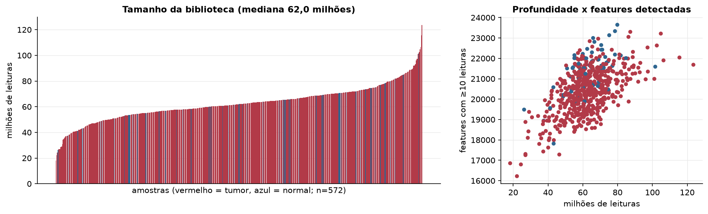
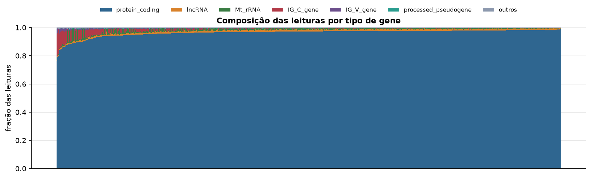
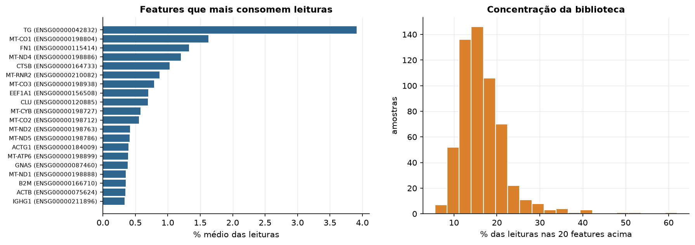
Sobredispersão e zeros
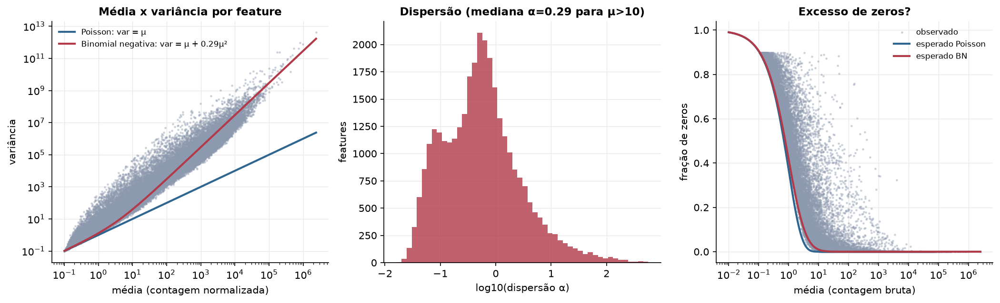
Exploração em log2(CPM+1)
Features com CPM ≥ 1 em pelo menos 20% das amostras (16.648 features).
Distribuição dos valores
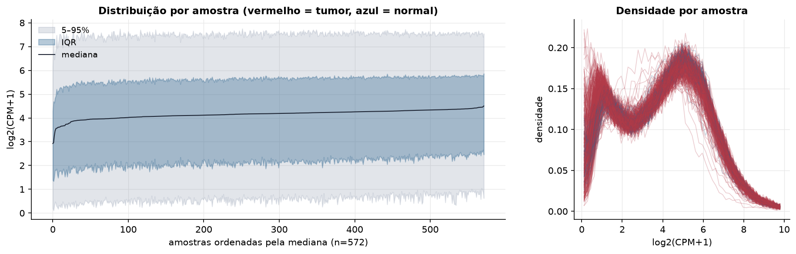
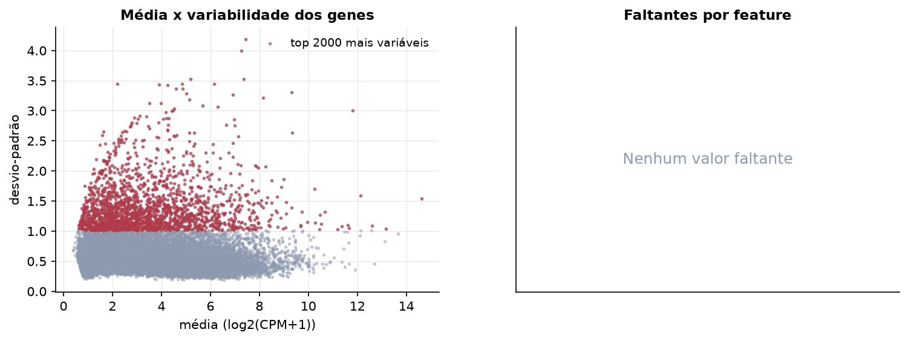
Estrutura das amostras
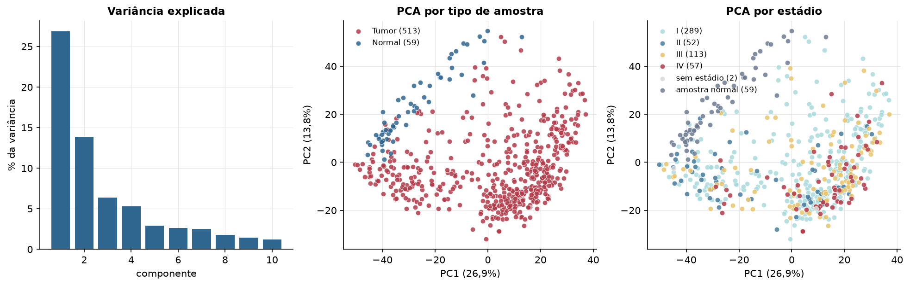
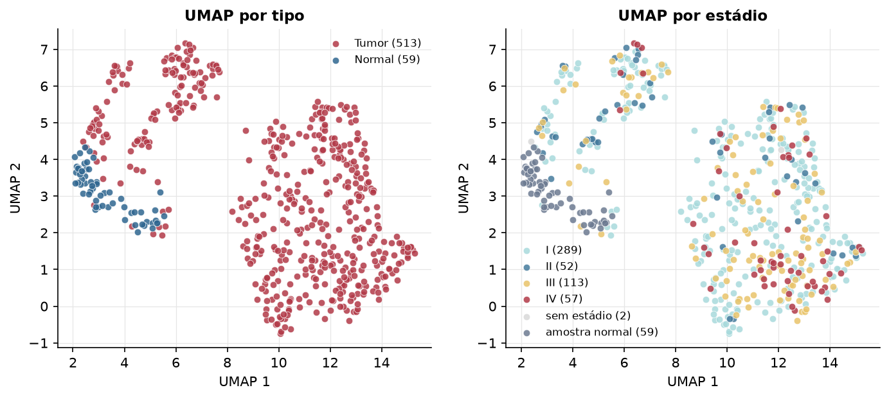
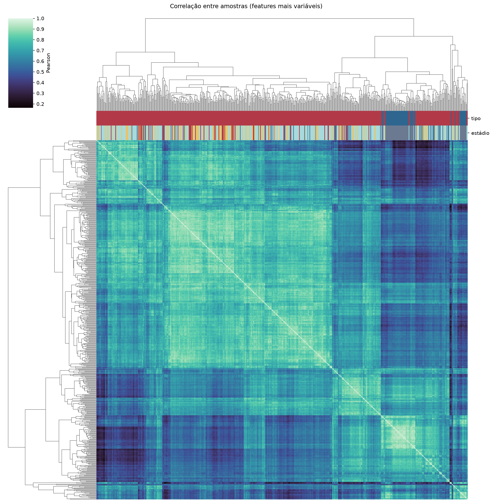
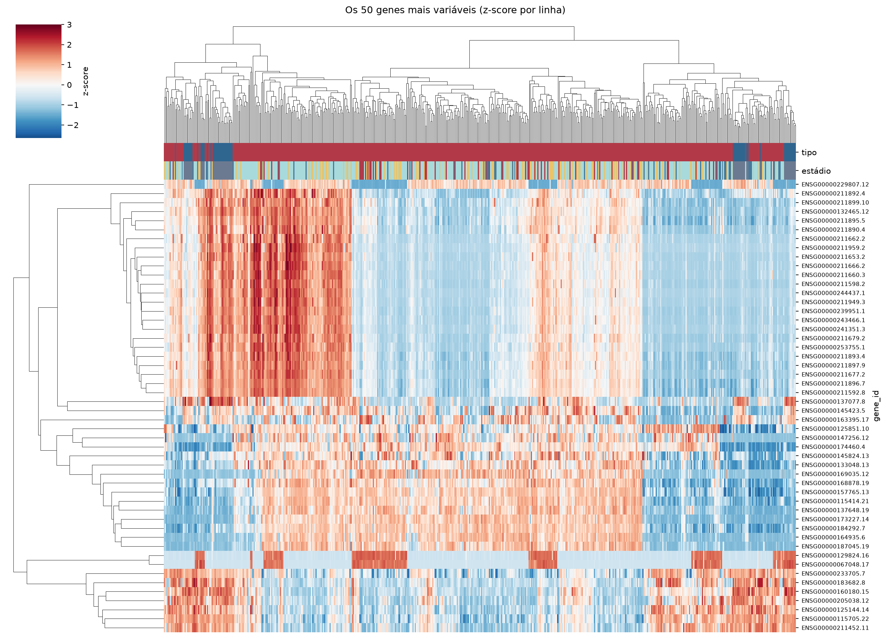
Tumor x normal
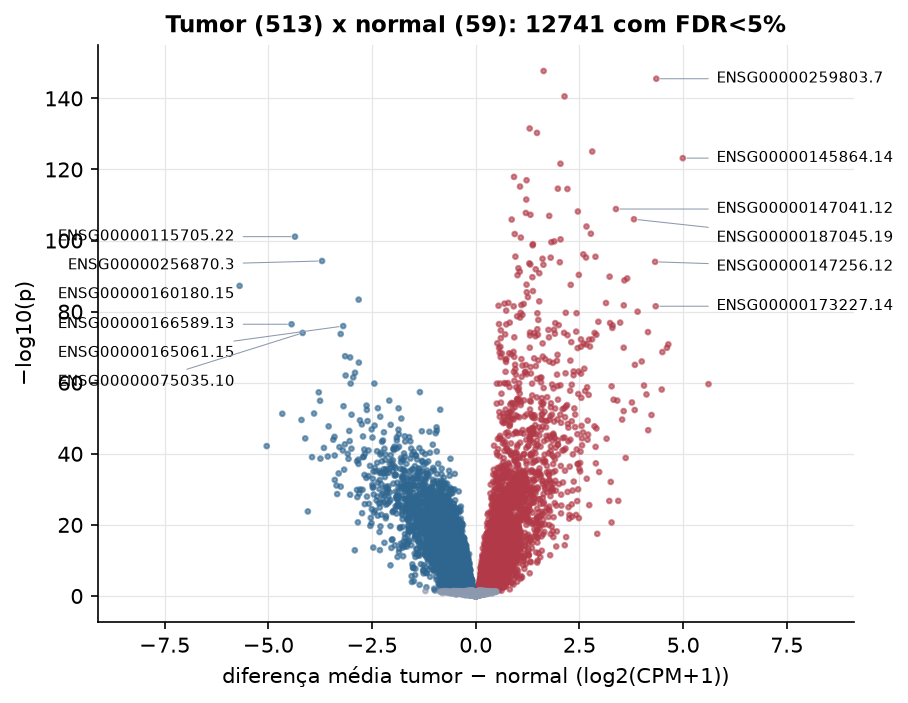
Features mais diferentes entre tumor e normal
| gene_id | diferenca_tumor_menos_normal | t | p | fdr |
|---|---|---|---|---|
| ENSG00000256268.2 | 1.637 | 37.229 | 1.98e-148 | 3.29e-144 |
| ENSG00000259803.7 | 4.354 | 38.101 | 2.96e-146 | 2.46e-142 |
| ENSG00000158055.16 | 2.141 | 35.82 | 2.75e-141 | 1.52e-137 |
| ENSG00000250748.6 | 1.3 | 32.713 | 2.91e-132 | 1.21e-128 |
| ENSG00000168754.15 | 1.477 | 32.454 | 5.06e-131 | 1.68e-127 |
| ENSG00000237463.6 | 2.809 | 31.327 | 8.93e-126 | 2.48e-122 |
| ENSG00000145864.14 | 4.992 | 39.491 | 6.48e-124 | 1.54e-120 |
| ENSG00000171346.16 | 2.043 | 31.21 | 2.4e-122 | 5e-119 |
| ENSG00000230918.2 | 0.923 | 29.927 | 1.21e-118 | 2.24e-115 |
| ENSG00000143839.15 | 1.226 | 29.713 | 1.08e-117 | 1.79e-114 |
| ENSG00000256340.8 | 1.068 | 30.715 | 6.33e-116 | 9.58e-113 |
| ENSG00000138622.4 | 1.98 | 33.194 | 2.53e-115 | 3.5e-112 |
| ENSG00000272482.1 | 2.211 | 29.437 | 3.04e-115 | 3.89e-112 |
| ENSG00000262772.2 | 1.219 | 31.249 | 2.93e-112 | 3.48e-109 |
| ENSG00000147041.12 | 3.38 | 31.595 | 1.36e-109 | 1.51e-106 |
| ENSG00000187823.3 | 2.462 | 29.074 | 6.65e-109 | 6.92e-106 |
| ENSG00000274565.1 | 1.208 | 28.997 | 1.7e-108 | 1.66e-105 |
| ENSG00000140481.15 | 1.32 | 27.785 | 5.63e-108 | 5.21e-105 |
| ENSG00000125931.11 | 1.772 | 29.018 | 1.14e-107 | 9.95e-105 |
| ENSG00000187045.19 | 3.815 | 28.442 | 9.99e-107 | 8.31e-104 |
| ENSG00000237512.6 | 0.867 | 27.806 | 1.23e-106 | 9.73e-104 |
| ENSG00000117308.15 | 2.67 | 37.979 | 1.12e-104 | 8.45e-102 |
| ENSG00000116983.13 | 2.776 | 29.226 | 1.17e-102 | 8.44e-100 |
| ENSG00000164400.6 | 0.94 | 26.9 | 1.46e-102 | 1.01e-99 |
| ENSG00000115705.22 | -4.358 | -27.868 | 7.96e-102 | 5.3e-99 |
| ENSG00000241749.4 | 1.087 | 31.567 | 1.46e-101 | 9.32e-99 |
| ENSG00000187017.17 | 2.045 | 26.841 | 4.62e-101 | 2.85e-98 |
| ENSG00000214797.3 | 1.894 | 26.329 | 1.71e-100 | 1.02e-97 |
| ENSG00000167105.8 | 1.824 | 26.272 | 2.92e-100 | 1.67e-97 |
| ENSG00000138308.6 | 1.379 | 26.386 | 1.06e-99 | 5.87e-97 |
Associação com variáveis clínicas
p-valores da associação dos três primeiros componentes principais (só tumores) com estádio (Kruskal-Wallis), sexo (Mann-Whitney), idade (Spearman) e sobrevida global (Cox univariado).
| estádio (Kruskal) | sexo (Mann-Whitney) | idade (Spearman) | sobrevida OS (Cox) | |
|---|---|---|---|---|
| PC1 (26,2%) | 2.8e-07 | 0.824 | 0.267 | 0.208 |
| PC2 (11,4%) | 0.006 | 0.504 | 0.612 | 0.167 |
| PC3 (6,8%) | 0.125 | 0.402 | 0.000395 | 0.483 |